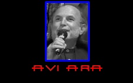

| Lorem, ipsum dolor. Fugit, voluptatibus possimus. A, obcaecati esse? | |
| Lorem, ipsum dolor. Repudiandae, sed maxime. Commodi, porro eius? | |
|  | Lorem, ipsum dolor. Ab, voluptates perferendis! Odio, quae. Deleniti? |
Daniel Robert Elfman nació el 28 de Mayo de 1953 en Los Ángeles, California. A la edad de 18 y junto con su hermano Richard, se fue a Francia. Allí se unió a un grupo de teatro musical. Al cabo de unos años se fue a África. Y no fue hasta que contrajo la malaria, cuando se volvió a Estados Unidos.
En 1980, Elfman trabajó junto a su hermano (el director Richard Elfman) en la película "Forbidden Zone" rodada en 16 mm. Richard formó por entonces un grupo musical llamado "The Mystic Knights of Oingo Boingo". Este fue el grupo que interpretó la banda sonora que compuso Elfman para "Forbidden Zone". A los pocos años, el grupo se deshizo.
En 1985 Elfman compuso la música para la película "Pee-Wee's Big Adventure" y fue cuando conoció a Tim Burton. La película fue todo éxito y a raíz de aquello nació la amistad entre el director y el compositor. Sin embargo, Elfman también ha trabajado con gran cantidad de directores, entre los que destacan Brian DePalma, Warren Beatty y por supuesto Sam Raimi.
Ganó su único Grammy en 1989 por su tema para Batman. Fue nominado a los Premios de la Academia en 1998 por "Hombres de negro" (Men in Black) y "El indomable Will Hunting" (Good Will Hunting).
Su proyecto más ambicioso fue "Pesadilla antes de Navidad", donde además de componer la música y las canciones, cantó e interpretó la voz del personaje principal. Existe un CD promocional con todas las canciones que compuso cantadas por él, imitando las voces de los personajes.
Hoy por hoy Elfman es uno de los compositores más innovativos y con un estilo claramente definido. Sin embargo se dice que al no tener estudios musicales, compone música con sus propios métodos. Dicen que el tema de Batman lo compuso silbando en una grabadora cuando viajaba en un avión. Sea como fuera, Elfman tiene el apoyo del público y de la crítica, convirtiéndole en uno de los compositores más famosos de Hollywood.
Peliculas
- "El Planeta de los Simios" [Tim Burton] (2001)
- "El Planeta de los Simios" [Tim Burton] (2001)
- "Prueba de vida" [Taylor Hackford] (2000)
- "Sleepy Hollow" [Tim Burton] (1999)
- "Instinto" [Jon Turteltaub] (1999)
- "A Civil Action (Acción civil)" [Steven Zaillian] (1998)
- "Un plan sencillo" [Sam Raimi] (1998)
- "El indomable Will Hunting" [Gus Van Sant] (1997)
- "Men in Black (Hombres de Negro)" [Barry Sonnenfeld] (1997)
- "Mars Attacks!" [Tim Burton] (1996)
- "Agárrame Esos Fantasmas" [Peter Jackson] (1996)
- "Mission: Impossible" [Brian De Palma] (1996)
- "Todo por un sueño" [Gus Van Sant] (1995)
- "El Ejercito de las Tinieblas" [Sam Raimi] (1993)
- "Pesadilla antes de Navidad" [Henry Selick] (1993)
- "Sommersby" [Jon Amiel] (1993)
- "Batman Returns" [Tim Burton] (1992)
- "Darkman" [Sam Raimi] (1990)
- "Eduardo manostijeras" [Tim Burton] (1990)
- "Dick Tracy" [Warren Beatty] (1990)
- "Batman" [Tim Burton] (1989)
- "Beetlejuice" [Tim Burton] (1988)
- "Pee-wee's Big Adventure" [Tim Burton] (1985)
Sony Picture Imageworks es ahora una de las compañías digitales más destacadas en el mundo de la animación de personajes y efectos visuales.
La compañía ha prestado su talento y tecnología en películas como "Los Ángeles de Charlie", "El Hombre sin Sombra", "Lo que la verdad esconde", "Stuart Little", "Godzilla", "Contact" y la nominada por la academia "Starship Troopers".
Imageworks esta trabajando actualmente en "Spider-Man", dirigida por Sam Raimi con John Dykstra y Karen E. Goulekas como supervisores de los efectos visuales de la película, y la esperada "Harry Potter", con Rob Legato como supervisor.

El 10 de Enero de 1924 nació Columbia Pictures, un nuevo estudio cinematográfico con un equipo realmente modesto. A lo largo de la década, bajo la vigilancia de su legendario fundador Harry Cohn, produjo algo mas de un centenar de películas de cine mudo, ninguna de las cuales obtuvo un lugar destacado en Hollywood. En 1928, un joven genio llamado Frank Capra se unió al equipo y después de dirigir varias películas poco importantes, alcanzo el primer premio de la academia en 1934 con la película "Sucedió una Noche". Era el primer Oscar a la mejor película que ganaba Columbia Pictures y, casi de la noche a la mañana, el equipo de Harry Cohn se equiparó a los grandes estudios Warner Bros. y Universal.
En los años cuarenta, Columbia Pictures se consolido como una de las mejores cinematográficas de Hollywood con estrellas de la talla de Humphrey Bogart, Rita Hayworth, Glenn Ford y Orson Welles. Columbia Pictures era el único estudio de Hollywood que consiguió no quedarse en números rojos a pesar de los duros años de la segunda guerra mundial.
En 1950 la audiencia bajó drásticamente debido a la popularidad de la televisión. Para competir, ofrecieron al publico lo que la pantalla pequeña no podía ofrecer: CinemaScope, Cinerama, 3-D y Dramas para adultos: "De aquí a la Eternidad" (1953), con Burt Lancaster, Montgomery Clift y Frank Sinatra; "La Ley del Silencio" (1954) ganadora de ocho premios de la Academia, con Marlon Brando. También produjo buenas comedias, muchas de ellas protagonizadas por la estrella del estudio Judy Holliday.
En los sesenta, la grandeza de los estudios de Hollywood comenzó a perder su identidad corporativa. Productores independientes alquilaban los espacios de la compañía: Sam Spiegel con "Laurence de Arabia" (1962), aportó un gran prestigio. En 1965, Columbia abrió su propia oficina de producción "Swingin London".
La sociedad americana de los setenta se acerco mucho más a las producciones de Columbia. Retorno Ray Stark con producciones como: "Tal Como Éramos" (1973) protagonizada por Barbra Streisand. En 1973, con la llegada de Alan Hirschfield y David Begelman, el estudio entro en el periodo más provechosos de su historia. Las más grandes recaudaciones de la década fueron: "Encuentros en la Tercera Fase" (1977) y Kramer contra Kramer" (1979).
En los ochenta, Columbia produjo películas "Grandes" como "Tootsie" con Dustin Hoffmann (1982) y las premiadas "Ghandi" (1982) y "El Ultimo Emperador" (1987).
En septiembre de 1989. la compañía electrónica Sony compro a Columbia Pistures Industries. Bajo Mark Canton, empezaron nuevos éxitos para la compañía: "Algo para Recordar", "Filadelfia" "Leyendas de Pasión" y "Todo por un Sueño". Se acercaba un futuro brillante. En octubre de 1996, John Calley fue nombrado Presidente y Jefe de Operaciones de Sony Pictures Entertainment.
La idea de Calley para Columbia, en su 75 aniversario, era lograr nuevos y grandes éxitos: "Jerry Maguire", "Mejor Imposible", "Hombres de Negro", "El Quinto Elemento", "La Mascara del Zorro" y "Godzilla" fueron un claro ejemplo del auge de la compañía.
Este nuevo milenio no quedara atrás, estará lleno de éxitos asegurados como "Spider-Man". Atrévete a vivir esta historia con Columbia.